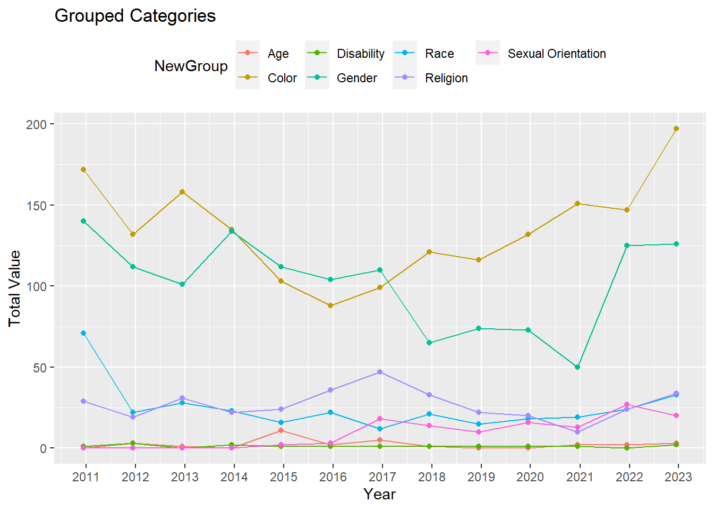

5 Conclusion
As we delved into the numbers and stories of New York City, a vivid picture emerged. It’s like reading chapters of a novel, each revealing the ups and downs of the city’s life. From understanding who’s in jail to tracking crime trends, we even explored the difficult topic of hate crimes.
New York City, our main character, faced challenges but also showed strength, especially in places like Kings County. We uncovered uncomfortable truths about hate crimes related to ‘Color,’ ‘Gender,’ and ‘Religion.’ Amid animated charts and changing crime rates, a crucial question lingered – is NYC a safe place?
A notable trend has been identified through our analysis – there has been a substantial decrease in both violent crimes and property-related offenses over time. Despite observing a decline in both categories, it is clear that the significant factor contributing to this positive trend is the reduction in property-related crimes. This observation underscores a positive trajectory in improving safety within New York City, particularly in the context of property offenses.
Now, let’s delve into the major crime categories to understand their distribution:
Violent Total:
Homicide Sexual Assault Robbery Aggravated Assault Property Total:
Burglary Larceny Motor Vehicle Theft
This bar chart illustrates the total adult rates for five counties. Each bar represents a county, showcasing its respective adult rate, providing a quick comparison of adult rates across the selected regions

In conclusion, our analysis painted a dynamic picture of crime rates over time. While overall crime is going down, specific types of crimes still pose challenges. Policymakers and communities need to adapt to these changes, considering factors like money and where people live. This isn’t just about numbers; it’s a call for action, inviting everyone to play a role in shaping the ongoing story of safety and resilience in New York City. Now, the story awaits your input – what role will you play in the next chapter?